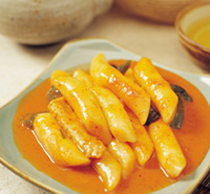
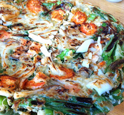
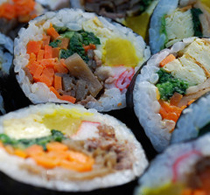
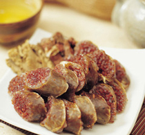
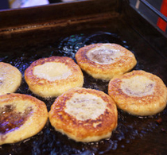
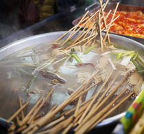
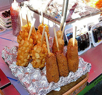
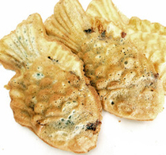
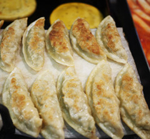
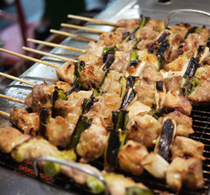

Seoul is a city that doesn’t exactly embrace its street food -- street carts are illegal and the authorities are trying to get rid of them -- but that doesn’t stop the locals from enjoying every morsel.
Pojangmacha, or street vendors, line busy shopping districts selling sweets and savory snacks. Some operate in the open air, and others have small, portable restaurants that offer shelter from inclement weather.
Pojangmacha literally means "covered wagons," and their tented street food stalls are popular with the after-work crowd looking for a nibble. Later in the evening, pojangmacha serving soju, a Korean spirit made from rice, are the perfect place to drink on the cheap. The many markets in town also offer places to try a wide variety of inexpensive Korean snacks.
|  |
Tteokbokki
They used to be considered Korean royal court cuisine, but nowadays, tteok, or rice cakes, are found on street corners all over Seoul. Tteokbokki is a dish made from cylinder-shaped rice cakes called garaetteok. The glutinous rice cakes are cooked with spicy red pepper paste and fish cakes to create this seriously chewy, seriously satisfying dish.
Try it at: Hyojadong Old-Fashioned Tteokbokki, Tongin Market, Tongin-dong, Jongno-gu, Seoul
|
|  |
Haemul pajeon
This savory pancake is filled with a combination of seafood: oysters, shrimp, squid, clams. It's a delicious and filling dish that's often served in restaurants as an appetizer or one of the small side dishes known as banchan. Eaten at pojangmacha, haemul pajeon taste best when accompanied by copious amounts of alcohol.
Try it at: Gongdeok Market, Gongdeok Station Exit 4, Gongdeok-dong, Mapo-gu, Seoul
|
|  |
Gimbap
The perfect street food, gimbap is tasty and easy to eat on the go. Made from steamed white rice and gim (dried laver seaweed), gimbap can have many possible fillings. Vegetarians can rejoice as most street food vendors carry a vegetable gimbap made with spinach, carrots, cucumber and pickled radish.
Try it at: 72-4, Insa-dong, Jongno-gu, Seoul
|
|  |
Sundae
No, it's not an ice cream dessert; it's a Korean blood sausage. Traditionally, sundae is made of pig's intestines stuffed with vegetables, glass noodles and pork blood. These days, when you buy sundae at pojangmacha it probably won't be made with pork intestines, but you'll still get a healthy helping of blood. It's especially yummy with salt.
Try it at: Gwangjang Market, 6-1 Yeji-dong, Jongno-gu, Seoul
|
|  |
Hotteok
A snack that is most popular during the chilly winter months, hotteok is a pancake filled with cinnamon and sugar and cooked on a flat grill. The heat causes the sugar to caramelize, creating a taste sensation that will both burn and delight your mouth. Sometimes you'll also find black sesame seeds and peanuts as a filling for hotteok.
Try it at: Namdaemun Market, Jung-gu, Seoul
|
|  |
Odeng
You'll see these tasty fish cakes being sold all over Seoul at night, where they are often an accompaniment to soju. Odeng are boiled in a seafood broth made from crab or anchovies with spring onion and daikon. When you order, you'll get an extra cup of the broth to drink or dunk your odeng in.
Try it at: 72-4, Insa-dong, Jongno-gu, Seoul
|
|  |
Gamja-dog
You have to hand it to the Koreans for this revolutionary twist on the common corn dog. Realizing the difficulty inherent in eating both a hot dog and fries while walking, some ingenious vendors came up with the idea of jamming hot dogs onto a stick, dipping them in batter, covering them with French fries and then deep-frying the whole mess. The result is as beautiful as it is satisfying.
Try it at: Myeong-dong, Jung-gu, Seoul
|
|  |
Bungeoppang
A Korean pastry in the form of a carp, bungeoppang is made by pouring a sweet pancake-like batter into a fish-shaped mold similar to a waffle iron. Red bean paste is added as a filling, and when it's cooked the result is a crispy-outside, gooey-inside treat. Red bean paste is the standard filling, but you can also find bungeoppang filled with sweet potato, chestnut or cream. Usually only sold in winter.
Try it at: 72-4, Insa-dong, Jongno-gu, Seoul
|
|  |
Mandu
These dumplings were long part of Korean royal court cuisine but are believed to have originated with Mongolian traders in the 14th century. Today you'll find them sold at pojangmacha as a cheap and filling snack. Thin-skinned and filled with minced meat, tofu, green onions, garlic and ginger, mandu are served with kimchi and chili-speckled soy sauce.
Try it at: Gwangjang Market, 6-1 Yeji-dong, Jongno-gu, Seoul
|
|  |
Dakkochi
A popular street food that comes in many varieties, dakkochi are simple skewers of grilled chicken. Most often they are served with sweet, tangy sauce, but there are also spicy and savory dakkochi topped with anything from mayonnaise to bright orange cheese powder. Dakkochi are always delicious, but even more so alongside a few drinks.
Try it at: 72-4, Insa-dong, Jongno-gu, Seoul
|